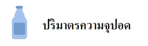

|
 |
 |
 |
|---|---|---|---|
 |
 |  |
 |
กลไกการหายใจ
การหายใจ (respiration) เป็นการนำอากาศเข้าและออกจากร่างกาย ส่งผลให้แก๊สออกซิเจนทำปฏิกิริยากับสารอาหาร ได้พลังงาน น้ำ และแก๊สคาร์บอนไดออกไซด์ กระบวนการหายใจเกิดขึ้นกับทุกเซลล์ตลอดเวลา โดยจำเป็นต้องอาศัยโครงสร้าง 2 ชนิดคือ กล้ามเนื้อกะบังลม และกระดูกซี่โครง ซึ่งมีกลไกการทำงานของระบบหายใจ ดังนี้ การหายใจเข้า (INSPIRATION)กล้ามเนื้อหายใจเข้า ทำงานเป็นแบบ active process คือมีการหดตัวของexternal intercostal muscle และ diaphragm เพื่อให้ปริมาตรของช่องอกเพิ่มขึ้น
การหายใจออก (EXPIRATION)กล้ามเนื้อหายใจออก การหายใจออกเป็นการทำงานแบบ passive process ซึ่งเกิดจากการคลายตัวของกล้ามเนื้อ หายใจเข้า และเกิดจาก elastic recoil ของปอดและทรวงอก แต่เมื่อมีการหายใจมากกว่าปกติ เช่นขณะมีการออกกำลังกาย หรือมีการอุดกั้นของทางเดินหายใจ จะเริ่มมีการใช้งานกล้ามเนื้อหายใจออก
- Abdominal muscle เช่น external / internal oblique, rectus abdominis, transversus abdominis - Internal intercostal muscle
ความดันออกซิเจนและการขนส่งสู่เนื้อเยื่อ
ที่ระดับน้ำทะเลนั้นมีความดันบรรยากาศประมาณ 760 mmHg โดยในอากาศปกตินั้น ประกอบด้วย ออกซิเจนประมาณ 21% เพราะฉะนั้นความดัน ออกซิเจน ที่เราหายใจ โดยปกติจะประมาณ 760 mmHg × 21% = 160 mmHg แต่ด้วยความเข้มข้นของคาร์บอนไดออกไซด์ที่เรากำลังขับออกมา ทำให้สัดส่วนออกซิเจนเปลี่ยนแปลงจนลดเหลือ 104 mmHg เมื่อเดินทางถึงถุงลมและมีการแลกเปลี่ยนเข้าสู่กระแสเลือด มีการศึกษา จนเกิดกราฟขึ้นมาเรียกว่า Oxygen dissociation curve แปลเป็นไทยว่า “กราฟความอิ่มตัวของเม็ดเลือดแดงที่จับกับออกซิเจนภายในเลือด ที่สัมพันธ์กับ ระดับความดันออกซิเจนในเลือดที่แตกต่างกัน” สรุปได้ว่า ถ้าออกซิเจนในถุงลมยิ่งเยอะ ออกซิเจนในเลือดก็ยิ่งเยอะตาม และสุดท้ายออกซิเจนในเม็ดเลือดแดงก็จะเยอะขึ้นตาม |
|---|